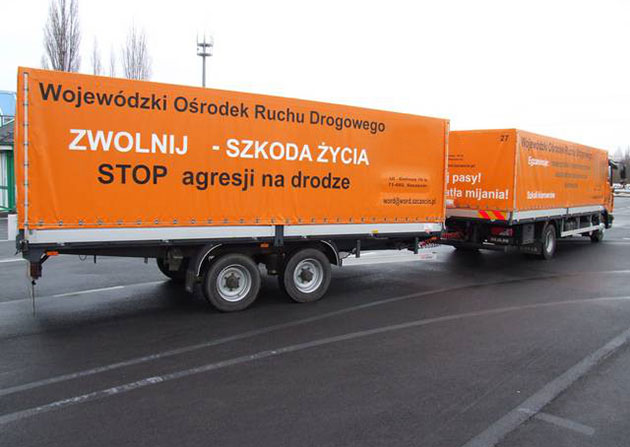

B
Auto & Anhänger
Klassen B, B96 und BE für Pkw und passende Anhängerkombinationen.
Auto-Klassen ansehen →Buchen Sie ein vollständiges Fahrschulpaket mit Theorie, Praxis und persönlicher Terminplanung in Deutschland oder Polen.
Wählen Sie den Fahrzeugbereich. Wir helfen Ihnen anschließend bei der genauen Klasse und beim passenden Ablauf.
Klassen B, B96 und BE für Pkw und passende Anhängerkombinationen.
Auto-Klassen ansehen →AM, A1, A2, A und B196 passend zu Alter, Erfahrung und Fahrzeug.
Motorrad-Klassen ansehen →C1, C1E, C und CE für größere Fahrzeuge und Anhängerkombinationen.
Lkw-Klassen ansehen →Wohnort, Sprache, Zeitrahmen und Erreichbarkeit gehören gemeinsam in die Entscheidung. Wir helfen Ihnen, die wichtigsten Fragen vor dem Start zu sortieren.

Angaben sendenKlasse, Wohnort und Wunschzeitraum mitteilen.
Fragen klärenWir besprechen Ausgangslage, Unterlagen und Ziele.
Nächste Schritte erhaltenSie wissen, was als Nächstes zu tun ist.
Wenn Sie nach einem kompletten Führerschein-Paket suchen, planen wir mit Ihnen Theorie, Praxis, Unterlagen und Termine. Der genaue Umfang richtet sich nach Führerscheinklasse und Lernstand.
Ausbildungspaket ansehen →Jede Seite beantwortet eine klar abgegrenzte Frage. So finden Sie schnell Informationen zu Ort, Klasse, Kosten oder Ablauf.
Gemeint ist die Buchung eines vollständigen Ausbildungspakets mit Theorie, Praxis, Unterlagenplanung und Terminen.
Ja. Senden Sie Klasse, Wohnort und Wunschzeitraum; die weitere Planung erfolgt persönlich.
Anfragen sind für Auto-, Motorrad-, Anhänger- und Lkw-Klassen möglich.
Der passende Ausbildungsort hängt unter anderem von Wohnsituation, Zeitraum, Sprache und Erreichbarkeit ab.
Senden Sie uns Ihre gewünschte Führerscheinklasse und Ihren Zeitraum.